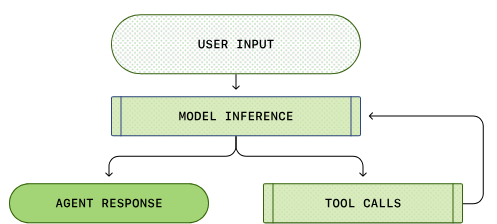

递归自我改进（recursive self-improvement，RSI）这一概念可追溯到 I. J. Good（1965）。他把「超智能机器」定义为能在一切智力活动上超越人类、并能设计出更好机器以改进自身的系统。Yudkowsky（2008） 则用「递归自我改进」特指一种反馈回路：AI 用当前智能去改进产生其智能的认知机制。
在当代 AI 里，这条反馈回路既可以指模型直接改写自身权重，也可以更广义地理解为：模型改进训练流水线与部署系统，从而催生在有经济价值任务上表现更强的后继模型。前沿实验室的研究迭代速度已被证明在急剧加快（Anthropic；OpenAI）。
我特意点出「部署系统」，是因为原始模型与真实世界之间的那一层，似乎与模型的原始智力（例如预训练刚结束时的评测表现）同样重要。Harness 是 AI 部署的关键组成部分——Claude Code、Codex 等成功的编程智能体产品已经说明了这一点。所谓 harness，就是包在基座模型外围的系统：它编排执行，并决定模型如何思考与规划、如何调用工具与行动、如何感知与管理上下文、如何存储产物，以及如何评估结果。
本篇聚焦 harness 工程相关研究，以及它如何服务于 RSI。近年大量关于自动科研、自我改进智能体、演化式程序搜索的工作，都可以围绕这一问题来组织。模型自博弈、合成数据、测试时训练，以及更广义的持续学习等主题也契合 RSI 愿景（例如 Yuan et al. 2024、Chen et al. 2024、Zhao et al. 2025、Choi et al. 2026），但它们不是本文重点。
Harness 设计模式
与早期智能体框架中「智能体 = LLM + 记忆 + 工具 + 规划 + 行动」相比，harness 工程还额外涵盖工作流设计（例如循环工程）、评估、权限控制与持久状态管理。它不再只是提示词模板，而更接近运行时与软件系统设计：模型如何观察、行动、记忆、自检与改进。
设计应刻意保持简单与通用，以利于泛化，并尽量对齐既有软件工程实践，以便吃到预训练知识的红利。操作系统与 harness 之间也有很强的类比：类似 OS，harness 应封装复杂逻辑，同时保持接口简单。与此同时，配置、工具接口等协议也可能逐步在业界标准化。
模式 1：工作流自动化
定义一个模型可以在其中运行、测试与迭代的工作流，是自动化的关键设计。Karpathy 的 autoresearch 仓库（https://github.com/karpathy/autoresearch）就是构造这类工作流的干净范例。常见流程是面向目标的循环：规划 → 执行 → 观察/测试 → 改进 → 再执行，直到达成目标。过程中也可能主动向用户请求澄清任务规格或执行偏好。

该工作流图也强调：模型分析自身轨迹与失败案例，再通过「智能体运行时」迭代推进，而不是依赖静态提示词模板。
模式 2：文件系统作为持久记忆
长程智能体系统中反复出现的模式是：用简单控制手段管理丰富状态与产物。Harness 不应把整条工作流和全部日志都塞进上下文；相反，应把耐久状态落在文件里。在长程智能体 rollout 中，实验日志、代码 diff、论文摘要、错误栈、历史轨迹等产物，往往远超模型训练时所面向的上下文窗口。
学会读写与编辑文件系统（通常经由 bash 命令）是 LLM 的基础能力；因此以文件这种简单形态管理持久记忆，天然能受益于核心模型能力的提升。
模式 3：子智能体与后台任务
Harness 可以并行派生多个子智能体，并监控后台任务。当主智能体需要同时搜索多种假设、并发跑实验，或把隔离子任务委派出去以免污染主上下文时，这一点很有用。父智能体于是需要一个轻量进程管理器：启动任务、检查日志、取消失败运行，并把结果合并回主线程。
关键设计选择是让并行性显式且可检视。若子智能体输出只活在短暂的对话上下文里，很快就会过时并被淹没。若它们以文件、日志与状态记录的形式保存，模型就能在中断后恢复，并基于自身执行历史继续推理。
案例：编程智能体 Harness
主流编程智能体的核心接口已在 Claude Code、Codex、OpenCode 以及 Cursor 类智能体之间趋于稳定。它们通常使用类似如下循环：

借助一组工具，编程智能体能在给定仓库中开发与调试问题，类似人类开发者配备 IDE。
（并非穷尽列表，仅作示意。感兴趣可阅读此仓库。）
| 组别 | 工具定义 |
|---|---|
| 文件系统 | 文件发现：glob、grep、ls；文件读取：read、read_many；文件修改：write（整文件新建）、edit（精确字符串替换）、multi_edit、apply_patch（应用结构化补丁/diff） |
| Shell 执行 | 运行命令：bash、PowerShell |
| IO | lsp，以及 git_status、git_diff、git_commit 等 git 工具 |
| 外部上下文 | MCP 工具、Skills |
| 网页搜索 | web_search、web_fetch、浏览器工具 |
| 产物 | 读取文档与图像；生成 HTML、图像 |
| 后台进程 | 例如：CronCreate、CronDelete、CronList |
| 智能体委派 | 例如：spawn_agent、resume_agent、wait_agent、list_agents、close_agent、interrupt_agent 等 |
Harness 层 vs 核心智能？
很难预判未来 RSI 会在多大程度上依赖 harness 工程，但近期路径不太可能从「模型直接改写权重」起步。我对务实近路的预测是：
- Harness 工程会朝元方法论方向演进（即改进「如何得到更好答案」的机制，而不只是改进答案本身）。Harness 系统本身成为优化目标，启发式规则更少，通用机制更多。
- 反过来，成熟的 harness 使面向模型自我改进的自动科研成为可能；而更聪明的模型又能防止 harness 过度工程化，让系统可持续。
最终，许多 harness 改进可能被内化为核心模型行为，但与外部上下文和工具的接口应会保留。我们在提示工程上见过更温和的版本：随着指令微调与模型推理能力提升，手工提示技巧不再那么中心，但明确目标、约束、上下文与评估的需求并未消失。
Harness 优化
Harness 系统中被优化对象的演进大致是：指令提示 → 结构化上下文 → 工作流 → harness 代码 → 优化器代码。随着模型更强，我们会走向更复杂的目标与更通用的方法。
上下文工程
简单地把所有工具响应与模型生成追加进上下文，会在智能体任务时程显著变长时迅速失控。上下文管理是一层：为 LLM 构造更结构化、更精炼的上下文，并管理持久状态。长上下文研究无疑会继续进步，但眼下长上下文智能与上下文工程往往交织在一起。
Agentic Context Engineering（ACE；Zhang et al. 2025）把上下文当作演化中的「剧本」，而不是不断加长的提示。它用三个组件维护一份由要点构成的上下文剧本，每条要点带有标识符与描述。
- Generator：参考要点生成任务轨迹。
- Reflector：从成功与失败轨迹中提炼洞见。
- Curator：用增量、分条条目更新结构化上下文。

为防止迭代重写时的上下文坍塌与「简短偏好」偏差，ACE 的一个关键设计是：Curator 不重写整块提示 blob，而是输出一组结构化、分条的 (标识符, 描述) 要点，再用确定性逻辑合并进结构化上下文日志。上下文条目会周期性精炼与去重。
ACE 从 rollout 中学习洞见，有助于走向自我管理的记忆，但更新规则与整体工作流仍是手工设计的。为进一步走向自我改进回路，Meta Context Engineering（MCE；Ye et al. 2026）把机制（如何管理上下文）与产物内容（上下文里有什么）分开：在元优化层做 skill 演化，在基础层做上下文优化。
一个 MCE skill $s \in \mathcal{S}$ 定义上下文函数 $c_s=(\rho_s,F_s)$，并把输入 $x$ 映射为上下文 $c = F_s(x;\rho_s)$，其中：
- $\rho_s = \{\rho_1,\dots,\rho_m\}$ 是静态组件（提示、知识库、代码库）。
- $F_s = \{F_1,\dots,F_k\}$ 是动态算子（搜索、选择、过滤、格式化）。
双层优化是在训练数据上对给定 skill $s$ 找最佳上下文 $c_s^*$，同时外层在验证集上找能带来最佳表现的最优 skill：
Skill 数据库跟踪既往 skill、上下文函数与评估指标的历史 $\mathcal{H}_{k-1} = \{(s_i,c_i,J_i^\text{train}, J_i^\text{val})\}_{i=1}^{k-1}$。元层智能体对既往 skill 做智能体式 crossover)，给定任务 $\tau$ 生成新 skill：$s_k=\text{crossover}(\tau,\mathcal{H}_{k-1})$。
随后，基础层上下文工程师执行 skill $s_k$，并在当前 skill 引导下，从 rollout 反馈 $\mathcal{R}_k$ 学习上下文函数：$c_k=\text{engineer}(\tau,s_k;c_{k-1}^*,\mathcal{R}_k)$。

MCE 不像 ACE 那样强制规定如何结构化上下文的启发式规则。它用自由形式的 skill 存储任务最重要的知识，并迭代地共同演化 skill 与以 skill 为条件的上下文。实现上，上下文函数 $c$ 实例化为专用目录中的一组文件，既有静态（skill.md）也有动态（上下文与数据 rollout）组件。元层与基础层优化都在配备标准工具集的智能体编程环境中执行：
Meta-Harness（Lee et al. 2026）再深入一层：被优化的对象是决定并优化「应存储、检索、呈现给模型哪些信息」的代码。名称中的「Meta-」意味着它是用于优化 harness 的 harness。

提出新 harness 的 proposer 本身就是编程智能体，最终输出是帕累托前沿上的一组 harness 候选。
- 全部执行历史可通过文件系统访问，因此编程智能体用
grep或cat等命令阅读历史，而不是把一切塞进单一提示上下文。 - 提出的 harness 是文件系统中的一个字典，包含其自身源码、分数、rollout 轨迹与状态更新。
- Meta-Harness 循环迭代创建新 harness，只保留合格者。

重要教训很清楚：一旦 harness 设计变成可执行的搜索空间，强编程智能体就能利用人类工程师所用的同一设计空间。
工作流设计
Harness 工程中的工作流可由领域专家手工设计。以自动科研为例，已有多种框架被提出并验证。AI Scientist 系统（Lu et al. 2026）构建了一条流水线：提出研究想法、写代码、跑实验、分析结果、撰写文稿并做同行评议。Meng et al.（2026） 在 ScientistOne 中把可验证性作为中心设计约束：每条主张（引用、数值、方法、结论）都必须追溯到证据源，并由 Chain-of-Evidence 检查审计。

Autodata 智能体（Kulikov et al. 2026）被设计成数据科学家角色，用于生成训练与评估数据。主智能体管理一个提出问题的 challenger、一个弱 solver、一个强 solver，以及一个 verifier/judge，目标是在「恰到好处」的难度上合成数据——即强 solver 成功而弱 solver 失败。
在 Autodata 中，challenger 提示会根据 solver 与 verifier 的反馈迭代更新。局限在于：合成任务被用于微调弱 solver，而非强 solver；若回路无法迭代改进强模型，它更像是对生成提示分布的间接蒸馏，RSI 味道较淡。

工作流设计空间极大，我们自然可把它当作搜索问题，从而用算法而非纯手工找到好解。沿此方向，Automated Design of Agentic Systems（ADAS；Hu et al. 2025）把智能体设计本身表述为优化问题——「元智能体搜索」：由元智能体提出新的智能体工作流设计。
- 用 CoT、self-refine 等简单智能体初始化智能体工作流归档。
- 让元智能体以代码形式编写新智能体，从归档中的既有方案汲取灵感。
元智能体先生成新工作流的高层描述，再以代码实现。
- 草稿程序再经元智能体两步 self-refine（即先让模型给反馈，再让同一模型基于反馈精炼先前输出；Madaan et al. 2023）以检查新颖性。
- 评估每个新候选，成功者加回归档。
- 重复步骤 2–3，直到达到最大迭代次数。

AFlow（Zhang et al. 2025）把智能体工作流表示为图：节点是调用 LLM 的动作，边以代码实现逻辑运算。工作流优化依赖 MCTS（蒙特卡洛树搜索）：
- 用模板在树中初始化起始工作流 $W_0$。
- 用分数与均匀探索的软混合选择工作流节点。
- 让 LLM 基于评估表现生成修改后的工作流以扩展该节点。
- 执行并评估新工作流。
- 若新工作流在 $N$ 轮预算内有改进，则加回树中。
- 重复步骤 2–5，直到 top-$k$ 平均分平台期或达到预算。

AFlow 在问答、代码与数学任务上的实验显示，相对手工设计的工作流以及 ADAS，AFlow 取得了不错的提升。

自我改进的 Harness
无论是上下文工程还是工作流设计，都只是 harness 的一部分。我们需要搜索整个设计空间，把上下文管理逻辑、工作流、权限以及许多其他 harness 组件一并优化。正如 Meta-Harness、ADAS、AFlow 等工作所示，✨代码✨是定义程序与系统的通用语言。简言之，harness 就是编排提示、工具调用、子智能体、控制流、记忆与工作流逻辑如何协同的代码。若 LLM 能优化执行智能体的代码，它就能进入远大于手工提示的设计空间。
Self-Taught Optimizer（STOP；Zelikman et al. 2023）是递归脚手架改进的早期例子之一。在 $t=0$ 的种子改进器 $I_0$ 接收初始解 $s$、效用函数 $u$ 与黑盒语言模型 $M$，返回改进后的解 $s'$，即 $s' = I(u, s; M)$。STOP 的目标不是直接改进 $s$，而是改进改进器 $I$ 本身。
首先，把元效用定义为给定改进器函数 $I$ 在下游任务集合 $\mathcal{D}$ 上的平均效用：
因为改进改进器本身也是优化问题，我们可通过自改进更新，基于 $I_{t-1}$ 以元效用衡量的表现，递归得到新版本 $I_t$：

实验中，改进后的改进器发现了多种策略，如遗传算法、分解并改进局部、多臂提示老虎机、模拟退火、变温度，以及 beam/树搜索。这类似于把 harness 工作流表示为优化对象。

Zelikman et al.（2023）的一个警示结果是：STOP 在用 GPT-4 时跨迭代提升了下游平均表现，但在 GPT-3.5、Mixtral 等较弱模型上反而退化。仅有递归结构不够——基座模型必须足够强，才能改进机制本身。这意味着 harness 改进能更好地部署模型，但智能仍是核心。
Lin et al.（2026） 更细致地考察了 harness 演化对模型能力的依赖。他们拆开两个轴：（1）harness-updating 指产出有用 harness 编辑的能力；（2）harness-benefit 指利用更新后的 harness 以更好完成任务的能力。有趣的是，从 Qwen3.5-9B 到 Claude Opus 4.6，不同规模与核心智能的模型在 harness 更新能力上表现相近；9B 的 harness 提出者/演化者能写出与 Opus 在程序结构上同构的 skill。而要充分利用 harness，模型需要正确且及时地调用 skills/工具，并擅长长程指令遵循。

更新近的工作 Self-Harness（Zhang et al. 2026）依赖 LLM 智能体通过「提出—评估—接受」循环改进自身 harness。

Self-Harness 循环分三阶段：
- 弱点挖掘：把失败聚类成以 verifier 为依据的失败模式。
用当前 harness $h_t$ 在任务上评估，并收集执行轨迹供分析。
- 注意：两次运行可能在错误日志表面共享同一 verifier 结果（如超时或缺失产物），却有不同因果机制。因此需要信息丰富的失败记录：包含终端 verifier 级原因、相关智能体行为的因果状态，以及轨迹所暴露的抽象智能体机制，以便揭示根因。
- Harness 提案：基于挖掘出的失败模式，提出有界的 harness 编辑。
同一模型在 $h_t$ 下作为 proposer 被调用。
- 模型获得有界的提案上下文：（1）当前 harness 的可编辑表面；（2）评估系统给出的以 verifier 为依据的失败模式；（3）应予保留的通过行为记录；（4）既往尝试过的编辑摘要。
- Harness 编辑应优先针对可解决的、复发的错误模式（例如非任务特有难度），并可用窄改动解决。
- 提案候选应彼此不同且多样。
- 提案验证：验证并合并合格编辑，得到新 harness $h_{t+1}$。
候选编辑在 held-in $D_\text{in}$（检验弱点是否解决）与 held-out $D_\text{out}$（检查是否引入其他未知问题）上做回归测试。
- 仅当在 held-in 与 held-out 上均无回归时才接受候选。
- 接受的候选合并以更新 harness 至 $h_{t+1}$；拒绝的候选记入日志，不改动活跃 harness。
在 Terminal-Bench-2 上对 MiniMax M2.5、Qwen3.5-35B-A3B 与 GLM-5 运行时，Self-Harness 学会了针对不同基座模型不同弱点的模型特有 harness 指令，并提升了 held-out 通过率。
这类 self-harness 工作也让我担心：若程序被允许编辑「操作系统」层，抽象边界就会被打破。可编辑表面需要妥善设计，权限控制与安全层必须位于该循环之外。奖励黑客相关挑战依然存在。
Agentic Harness Engineering（AHE；Lin et al. 2026）认为 harness 演化的瓶颈在于可观测性——即当 rollout 失败时，我们需要知道责任在哪个组件，且每一次编辑都应有证据支撑。
该框架用三大可观测性支柱构成闭环：
- 组件可观测性：每个可编辑 harness 组件在文件系统中都有表示，使动作空间显式且可追踪。
一个 harness 含 7 个组件：系统提示、工具描述、工具实现、中间件、skill、子智能体配置，以及长期记忆。
- 每种失败模式映射到一个组件，使编辑更有针对性。
- 经验可观测性：把大量原始轨迹分析并汇总为证据与失败模式的层级。
每个 harness 生成 $k$ 条轨迹。
- 用「Agent debugger」智能体分析每条存于单独文件的轨迹，生成每任务的根因分析报告（失败或成功）。
- 所有每任务报告再汇总为下一步用的基准总览；需要时可回看原始轨迹。这种分层访问结构更省 token。
- 决策可观测性：每次编辑都配对下一轮可验证的预测。
「Evolve agent」阅读仓库并决定编辑哪个组件，然后产出编辑及其推理。
- 每次编辑都是文件级、可证伪的主张，可在下一轮验证，并受两条约束：
（1）编辑只作用于 harness 工作区；runs 目录、tracer、verifier 与 LLM 配置只读——这禁用了一类奖励黑客（例如关闭 verifier、替换模型，或抬高推理预算），从而保证记录到的收益可归因于 harness 编辑。
- （2）编辑由证据驱动，并附宣言条目：失败证据名称、推断根因、针对性修复，以及预测影响（预期修复与风险回归）。
在 Terminal-Bench-2 上，AHE 优于人类设计的 harness（OpenCode、Terminus-2、Codex），Hard 档除外，也优于若干其他自演化基线（ACE、TF-GRPO）。同一冻结 harness 在不再演化的情况下迁移到 SWE-bench-verified，表明演化出的 harness 能把工程经验编码进组件，而非做基准特化优化。
演化搜索
演化搜索是受自然选择启发的优化方法（参见我旧文演化算法）。它通过对种群个体做变异、只保留「适应度」高者来演化解。当（1）搜索空间很大或形状怪异；（2）难以用梯度直接优化但易于评估解时，演化搜索很管用。Harness 搜索似乎正合适。
演化搜索过去已用于提示工程。Promptbreeder（Fernando et al. 2023）通过丰富的变异操作优化任务提示，有趣的是变异提示（即指示 LLM 去变异任务提示的指令）本身也通过演化改进。GEPA（Agrawal et al. 2025）把基于反思的提示与演化搜索结合，用自然语言对试错轨迹的反思来提出提示更新。
Novikov et al.（2025） 提出 AlphaEvolve，作为编程智能体演化搜索系统：维护候选程序池，提示冻结 LLM 生成改进用的 diff。系统反复评估子代程序并保留成功者，随时间发现更好解。

AlphaEvolve 设计中有几处细节很重要：
- 提示包含父程序、结果、指令，有时还有元信息。
- 编程智能体可访问完整仓库，但待改进代码区域用
# EVOLVE-BLOCK-START与# EVOLVE-BLOCK-END显式标出。 - 元提示与指令及上下文按 LLM 建议共同演化，方式类似演化解程序。
消融实验显示了演化流程、提示中的上下文、元提示、全文件演化以及更强 LLM 的价值。

近期变体如 ThetaEvolve（Wang et al. 2025）把演化搜索与 RL 及上下文学习结合；DemoEvolve（Che et al. 2026）用人类专家演示增强自 rollout 归档，作为 harness 级诊断与编辑的参考经验。另一方面，ShinkaEvolve（Lange et al. 2025）引入三个新组件以提升 LLM 采样效率：
- 通过设计兼顾性能排名与子代数的父代采样，实现更样本高效的探索。
- 基于嵌入余弦相似度丢弃与现有种群过于相似的候选，做代码新颖性拒绝采样。
- 在元草稿本中识别成功解中的好模式，以指导未来变异。
与上述侧重解改进的方法不同，Darwin Gödel Machine（DGM；Zhang et al. 2025）明确以可编辑的 harness 代码仓库演化为目标，由基于 LLM 的编程智能体执行。精确地说，该智能体被允许修改自身 harness。后续工作 Hyperagents（Zhang et al. 2026）引入元智能体，控制如何修改既有任务智能体以创建新智能体。
- 从池中一个编程智能体起步。
- 每轮按与性能成正比、与子代数成反比的概率选一个父代，修改并分支以产生新智能体。
- 被选父代检查自身基准评估日志，再提出对自身 harness 代码库的改进，生成新版编程智能体。代码编辑用两个基础工具实现：（1）bash（参数：
<bash_command>）；（2）editor（参数：view/create/edit <file_path>）。 - 评估新编程智能体，仅足够高性能者加回池中。
- 重复步骤 2–4，直到满足停止准则。
DGM 是在固定模型下的 harness 演化。以 Claude 3.5 Sonnet 为基座 LLM、从简单初始 harness 配置出发的实验中，DGM 发现的智能体在 SWE-bench Verified（20% → 50%）与 Polyglot（14.2% → 30.7%）上可比或优于手工智能体。
这类方法在候选解可自动评估、适应度易于量化时效果好，例如矩阵乘法、GPU 内核优化、算法竞赛、数据中心调度。在评估缓慢、模糊或主要靠启发式的领域则吃力。演化的算力效率与有效性也是顾虑。
与模型权重的联合优化
Harness 演化改变的是模型周围的非参数系统。要通向完整自我改进，也可以同时允许模型更新自身权重。权重更新可通过改进模型训练流水线，或在测试时持续学习来实现。持续学习值得另开一篇专文。
SIA（Hebbar et al. 2026）是在同一优化循环中结合 harness 改进与模型参数更新的早期尝试，设计含三个组件：
- Meta-Agent：提出初始 harness。
- Task-Specific Agent：执行任务。
- Feedback-Agent：根据近期轨迹决定下一步更新 harness 还是模型权重。

SIA 实验中有若干混杂选择，使结果难以解释。例如，任务专用智能体远弱于 Meta-Agent 与 Feedback-Agent 所用模型（gpt-oss-120b vs Claude Sonnet 4.6），基线也过弱，难以与相关方法干净对照。我认为方向有趣，但证据尚属暂定。训练稳定性、Goodhart 效应等许多挑战仍未解决。
Continual Harness（Karten et al. 2026）在长程游戏设定中实验了 harness 更新，并通过把强教师模型在低奖励轨迹上的标签蒸馏，共同学习策略模型。
未来挑战
AI Scientist 一脉的工作有力表明：专家设计的 harness 能协调自动科研循环的大部分环节，并以撰写研究论文的形式做了实验。但论文产出并不等同于科学发现。系统可以写出看似合理的文稿，同时仍存在捏造引用、实现漂移或薄弱实验结果。
Trehan & Chopra（2026） 测试了 LLM 能否在最小脚手架与基本工具（即 read_file、write_file、llm_search、list_files）下从研究想法走到论文。每个想法有专用工作区，智能体可在其中生成并阅读文档作为上下文。他们在三个领域实验（世界模型、多智能体 RL、AI 安全与对齐），每域含 45–50 篇高质量种子文档以激发新想法。人类专家只选出四个想法走完整流水线，其中仅一个被完整执行成论文。实验中观察到六种反复出现的失败模式：
- 偏向训练数据默认：使用旧库、过时命令、标准格式，或未扎根于实际仓库/数据集的假设。
- 执行压力下的实现漂移：当实现变得技术复杂时，模型可能滑向常见更简单解，而非所提出的方法。
- 记忆与上下文退化：除非把日志写成持久产物，长程项目会丢失关键细节。
- 过度乐观：即便实验嘈杂或失败，模型仍宣称成功——类似 Bubeck et al.（2025） 观察到的「p-hacking 与 Eureka-ing」模式：模型可能贴上「数值胶带」并在信号仍是噪声时宣告胜利。
- 领域智能不足：模型缺乏隐性工艺知识，例如预估实现复杂度、判断实验结果是否合理，或知道哪些基线重要。
- 科学品味薄弱：实验或许可执行，却未能回答正确的问题。
迈向完整 RSI，研究者已取得实质进展，但仍有若干瓶颈。
- 弱且模糊的评估器。 许多研究主张没有快速精确的 verifier，许多真实世界任务亦然。当前自我改进回路在评估指标可测且客观时效果最好，类似强化学习的工作方式。
研究品味、新颖性与长期科学价值更难衡量。例如，研究品味往往混合问题框定、实验设计，以及判断哪些惊人结果值得追、哪些失败案例值得重试。
- 上下文与记忆生命周期。 随着 AI 智能体更自主独立，记忆不断增长。有用的 harness 需要管理上下文与记忆，以弥补长上下文生成的既有局限，同时最大化长程任务成功率。人类能终生维持记忆，我在此看到一种类比：上下文工程将会且应当成为智能的核心部分，而不是停留在软件系统层。
- 负结果。 研究者被激励发表成功结果，因此文献偏向成功。在大量数据（至少目前多数仍由人类创造，哈哈）上训练的 LLM，可能不擅长决定何时放弃假设、报告负结果，甚至承认失败——因为数据中成功与失败失衡。研究 harness 应让失败尝试易于保存，因为从失败中学习是缩减任务搜索空间的最佳方式。
- 多样性坍塌。 演化与 RL 回路倾向于剥削已知高奖励模式。我们需要机制防止种群坍塌为同一解的变体。这对开放式研究尤其关键——最佳路径在当前评估器下起初可能看起来更差。
- 奖励黑客。 自我改进回路优化的是被给定的任何信号。若奖励来自单元测试，智能体可能过拟合测试；若来自裁判模型，可能学会针对该裁判的黑客技巧；若来自基准分数，可能利用基准伪迹。
评估器与权限控制很可能应置于演化 harness 的循环之外，配合 held-out 测试、轨迹审计，以及在关键决策点的人类审阅——监督能在多大程度上规模化与自动化，仍是开放研究问题。
- 长期成功。 外在优化回路作用于个体 rollout 之外、可在训练沙箱中模拟的奖励。
以编程智能体为例。编程智能体已提升软件工程日常生产力，但许多优化目标仍过于短期。它往往能完成手头任务，却不太清楚应如何保护由成百上千工程师共同维护的仓库的长期健康。标准基于沙箱的 RLVR 式训练很少捕捉可维护性、所有权边界、迁移成本、向后兼容或未来调试负担。
- 人类的角色。 人类应上移抽象栈，而不是被移出循环——即在正确的时间、正确的抽象层次提供监督；系统设计应考虑何时、如何设置这些触点。
上述许多挑战需要人类的反馈与引导。归根结底，我们是在为人类更好的未来建造技术，而不是反过来。
引用
请按如下方式引用本工作：
Weng, Lilian. “Harness Engineering for Self-Improvement”. Lil’Log (Jul 2026). https://lilianweng.github.io/posts/2026-07-04-harness/
或使用 BibTeX：
@article{weng2026harness,
title = {Harness Engineering for Self-Improvement},
author = {Weng, Lilian},
journal = {lilianweng.github.io},
year = {2026},
month = {July},
url = "https://lilianweng.github.io/posts/2026-07-04-harness/"
}附录：一些有用的基准
- PaperBench：从零复现 20 篇 ICML 2024 Spotlight 与 Oral 论文，包括理解论文贡献、开发代码库并成功执行实验。 - 每个复现任务分解为更小的、可单独打分的子任务。 - 共 8,316 条评分细则，与论文作者共同制定。 - 当时最佳模型（
Claude 3.5 Sonnet，约 21%）未超过 ML 博士生。 - 包含 PaperBench、PaperBench Code-Dev（轻量版）与 JudgeEval。
- CORE-Bench：评估已发表研究的计算可复现性。 - 基于计算机科学、社会科学与医学领域 90 篇科学论文的 270 项任务。 - 任务是从提供的代码与数据复现结果。 - 含多种难度，以及纯语言与视觉-语言任务。 - 当时报告的最佳智能体（
GPT-4o与GPT-4o-mini）在最难任务上仅达 21% 准确率。
- ScienceAgentBench：评估面向数据驱动科学发现的 LLM 智能体。 - 从四个学科（数学、化学、生物、地理）44 篇同行评审论文中抽取 102 项任务。 - 覆盖这些领域的基础数据科学任务：数据处理、模型开发、数据分析与信息可视化。
- RE-Bench：在真实 ML 研究工程环境中，对照人类专家评估前沿 AI 智能体。 - 7 个具有挑战性的开放式 ML 研究工程环境。 - 每个环境 =（评分函数，起始解，参考解）；每个可用 8 张或更少 H100 GPU 运行。 - 示例：优化内核、跑 scaling-law 实验、修复嵌入、为 QA 微调 GPT-2 等。 - 含 61 位不同人类专家的 71 次八小时尝试数据。 - 人类专家在 82% 的八小时尝试中取得非零分；24% 达到或超过强参考解。 - 最佳 AI 智能体在 2 小时预算下得分是人类的 4×，但人类在更长预算上回报更好，并在 8 小时与 32 小时设定上超过智能体。
- MLE-bench：在离线 Kaggle 竞赛上评估 ML 工程智能体。 - 含从 Kaggle 精选的 75 场 ML 工程竞赛。 - 测试训练模型、准备数据集、跑实验，以及向评分脚本提交预测。 - 以 Kaggle 公开排行榜作为人类基线。 - 文中最佳设置——
o1-preview配 AIDE scaffolding——在 16.9% 的竞赛中至少达到 Kaggle 铜牌水平。 - 含资源扩展与污染分析。
- KernelBench：评估生成 GPU 内核的正确性与速度。 - 250 个 PyTorch 任务，评估 LLM 能否写出又快又正确的内核。 - 评估指标 fast_p = 正确且快于基线的生成内核百分比。
参考文献
[1] Good, I. J. “Speculations Concerning the First Ultraintelligent Machine.” Advances in Computers, 6:31–88, 1965.
[2] Yudkowsky, Eliezer. “Recursive Self-Improvement.” LessWrong, 2008.
[3] Choi, et al. “Anchored Self-Play for Code Repair.” ICML 2026.
[4] Zhao, et al. “Absolute Zero: Reinforced Self-play Reasoning with Zero Data.” arXiv preprint arXiv:2505.03335, 2025.
[5] Yuan, et al. “Self-Rewarding Language Models.” arXiv preprint arXiv:2401.10020, 2024.
[6] Chen, et al. “Self-Play Fine-Tuning Converts Weak Language Models to Strong Language Models.” ICML 2024.
[7] Zhang, et al. “Agentic Context Engineering: Evolving Contexts for Self-Improving Language Models.” ICLR 2026.
[8] Ye, et al. “Meta Context Engineering via Agentic Skill Evolution.” arXiv preprint arXiv:2601.21557, 2026.
[9] Lee, et al. “Meta-Harness: End-to-End Optimization of Model Harnesses.” arXiv preprint arXiv:2603.28052, 2026.
[10] Lu, et al. “Towards end-to-end automation of AI research.” Nature, 651:914–919, 2026.
[11] Meng, et al. “ScientistOne: Towards Human-Level Autonomous Research via Chain-of-Evidence.” arXiv preprint arXiv:2605.26340, 2026.
[12] Kulikov, et al. “Autodata: An agentic data scientist to create high quality synthetic data.” arXiv preprint arXiv:2606.25996, 2026.
[13] Hu, Lu, and Clune. “Automated Design of Agentic Systems.” ICLR 2025.
[14] Madaan, et al. “Self-Refine: Iterative Refinement with Self-Feedback.” NeurIPS 2023.
[15] Zhang, et al. “AFlow: Automating Agentic Workflow Generation.” ICLR 2025.
[16] Zelikman, et al. “Self-Taught Optimizer (STOP): Recursively Self-Improving Code Generation.” COLM 2024.
[17] Zhang, et al. “Self-Harness: Harnesses That Improve Themselves.” arXiv preprint arXiv:2606.09498, 2026.
[18] Fernando, et al. “Promptbreeder: Self-Referential Self-Improvement Via Prompt Evolution.” arXiv preprint arXiv:2309.16797, 2023.
[19] Agrawal, A. et al. “GEPA: Reflective Prompt Evolution Can Outperform Reinforcement Learning.” arXiv preprint arXiv:2507.19457, 2025.
[20] Novikov, et al. “AlphaEvolve: A coding agent for scientific and algorithmic discovery.” arXiv preprint arXiv:2506.13131, 2025.
[21] Lange, Imajuku, and Cetin. “ShinkaEvolve: Towards Open-Ended And Sample-Efficient Program Evolution.” arXiv preprint arXiv:2509.19349, 2025.
[22] Wang, et al. “ThetaEvolve: Test-time Learning on Open Problems.” arXiv preprint arXiv:2511.23473, 2025.
[23] Zhang, et al. “Darwin Gödel Machine: Open-Ended Evolution of Self-Improving Agents.” arXiv preprint arXiv:2505.22954, 2025.
[24] Zhang, et al. “Hyperagents.” arXiv preprint arXiv:2603.19461, 2026.
[25] Yuksekgonul, et al. “Learning to Discover at Test Time.” arXiv preprint arXiv:2601.16175, 2026.
[26] Riaz, et al. “Epistemic Uncertainty for Test-Time Discovery.” arXiv preprint arXiv:2605.11328, 2026.
[27] Hebbar, et al. “SIA: Self Improving AI with Harness & Weight Updates.” arXiv preprint arXiv:2605.27276, 2026.
[28] Trehan and Chopra. “Why LLMs Aren’t Scientists Yet: Lessons from Four Autonomous Research Attempts.” arXiv preprint arXiv:2601.03315, 2026.
[29] Bubeck, et al. “Early science acceleration experiments with GPT-5.” arXiv preprint arXiv:2511.16072, 2025.
[30] Starace, et al. “PaperBench: Evaluating AI’s Ability to Replicate AI Research.” ICML 2025.
[31] Wijk, et al. “RE-Bench: Evaluating frontier AI R&D capabilities of language model agents against human experts.” ICML 2025.
[32] Chan, et al. “MLE-bench: Evaluating Machine Learning Agents on Machine Learning Engineering.” arXiv preprint arXiv:2410.07095, 2024.
[33] Chen, et al. “ScienceAgentBench: Toward Rigorous Assessment of Language Agents for Data-Driven Scientific Discovery.” ICLR 2025.
[34] Siegel, et al. “CORE-Bench: Fostering the Credibility of Published Research Through a Computational Reproducibility Agent Benchmark.” TMLR 2024.
[35] Ouyang, et al. “KernelBench: Can LLMs Write Efficient GPU Kernels?” arXiv preprint arXiv:2502.10517, 2025.
[36] Lin, et al. “Harness Updating Is Not Harness Benefit: Disentangling Evolution Capabilities in Self-Evolving LLM Agents.” arXiv preprint arXiv:2605.30621, 2026.
[37] Lin, et al. “Agentic Harness Engineering: Observability-Driven Automatic Evolution of Coding-Agent Harnesses.” arXiv preprint arXiv:2604.25850, 2026.
[38] Karten, et al. “Continual Harness: Online Adaptation for Self-Improving Foundation Agents.” arXiv preprint arXiv:2605.09998, 2026.
[39] Che, et al. “DemoEvolve: Overcoming Sparse Feedback in Agentic Harness Evolution with Demonstrations.” arXiv preprint arXiv:2605.24539, 2026.